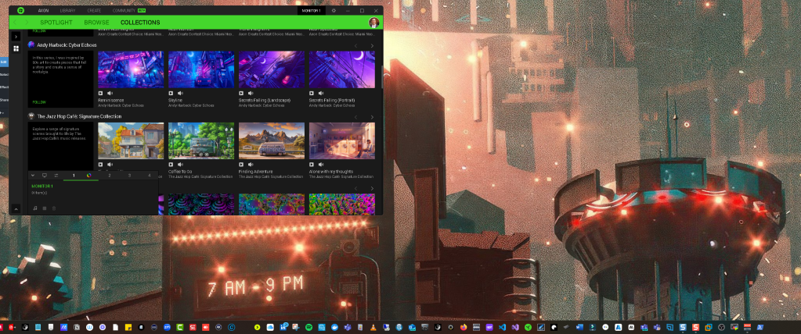

Setting Up Dynamic Wallpapers with Razer Axon: A Step-by-Step Guide

If you're looking to bring your desktop to life with dynamic and visually stunning wallpapers, Razer Axon is the perfect tool for the job. This guide will walk you through the process of setting up and customizing your wallpapers using Razer Axon, ensuring your desktop is as lively and dynamic as your gaming setup.
What is Razer Axon?
Razer Axon is a powerful tool designed to enhance your gaming experience by allowing you to use animated wallpapers and effects on your desktop. It offers a wide array of wallpapers that can range from subtle animations to full-blown dynamic scenes that react to in-game actions or your system’s audio. Whether you're gaming, working, or just chilling, Razer Axon lets you customize your desktop to match your mood or your game.
How to Set Up Razer Axon for Dynamic Wallpapers
-
Download and Install Razer Axon
-
Visit the official Razer website and download Razer Axon.
-
Run the installer and follow the on-screen instructions to complete the installation.
-
Once installed, open Razer Axon from your desktop or Start menu.
-
Set Up Your Razer Account
-
If you haven’t already, you’ll need to create a Razer account to access the full features of Razer Axon.
-
Sign in or create an account through the Razer Axon interface.
-
Explore Available Wallpapers
-
Within Razer Axon, browse through the extensive library of available wallpapers.
-
You can filter by category, such as gaming themes, nature, abstract designs, or even seasonal collections.
-
Each wallpaper has a preview, so you can see how it will look before applying it.
-
Choose and Apply a Wallpaper
-
Once you've found a wallpaper you like, click on it to open the details page.
-
Click "Apply" to set the wallpaper as your desktop background.
-
Razer Axon will automatically apply the wallpaper, and you should see it active on your desktop.
-
Customizing Wallpaper Effects
-
Many Razer Axon wallpapers come with customizable effects. To access these options, click on the wallpaper thumbnail on the main screen.
-
Here, you can adjust the speed of the animation, choose different variations of the wallpaper, or even sync it with your Razer Chroma devices.
-
For wallpapers that react to audio or in-game actions, you can configure these settings under the "Effects" or "Triggers" tabs.
-
Set Up Multi-Monitor Support (Optional)
-
If you’re using multiple monitors, Razer Axon supports extending wallpapers across all screens or setting different wallpapers on each monitor.
-
Navigate to the "Settings" tab within Razer Axon, and under "Display," configure your wallpapers for each monitor.
-
Optimizing Performance
-
Animated wallpapers can sometimes be resource-intensive. Razer Axon allows you to adjust the performance settings to ensure your system runs smoothly.
-
Under the "Settings" tab, you can lower the resolution or frame rate of the wallpaper to reduce the impact on your CPU and GPU.
-
Setting Up Wallpaper Schedules (Optional)
-
Razer Axon also lets you set up schedules to change wallpapers automatically at specific times of the day.
-
Go to the "Schedules" section in the app, and create a new schedule. Here, you can choose which wallpapers to rotate through and when they should change.
Final Thoughts
With Razer Axon, transforming your desktop into a vibrant, dynamic space is easier than ever. Whether you're setting the mood for an intense gaming session or just want something soothing while you work, Razer Axon has a wallpaper for you. By following this guide, you’ll have your new dynamic wallpaper up and running in no time, making your setup not only functional but also a feast for the eyes.
Ready to take your desktop to the next level? Download Razer Axon and start customizing today!
Imported from rifaterdemsahin.com · 2025